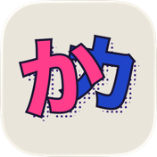
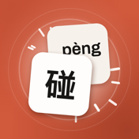

wz333
I build weird little things.

Kana Pop
Learn hiragana and katakana by matching them, fast.

Hanzi Crush
Match characters that share a Mandarin pronunciation, across four tiers of difficulty.
I build weird little things.

Learn hiragana and katakana by matching them, fast.

Match characters that share a Mandarin pronunciation, across four tiers of difficulty.